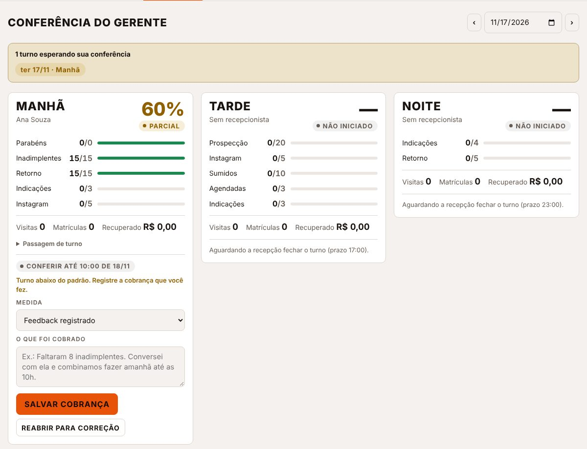
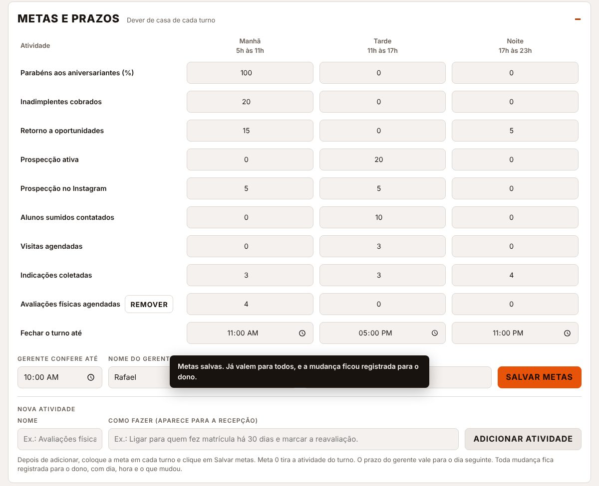
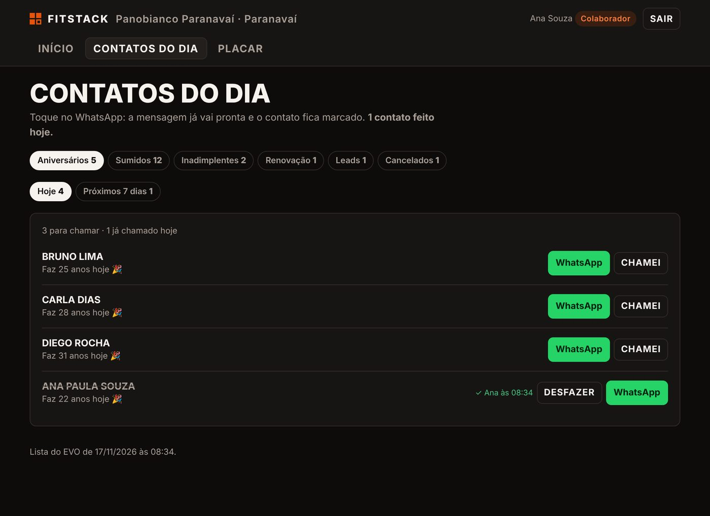
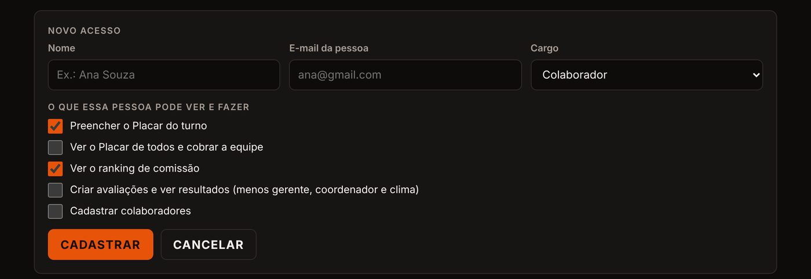

Conferir os turnos, cobrar com registro, mudar metas, acompanhar os contatos e cadastrar a equipe.
O que tem neste manual
Seu papel no FitStack
Sua rotina todo dia
Conferir um turno
Mudar metas e criar atividades
Contatos do dia: acompanhar a recepção
Cadastrar um colaborador
Avaliações anônimas
Se der problema
1.Seu papel no FitStack
Você é quem faz o sistema funcionar no dia a dia. A recepção faz as tarefas, você confere e cobra, e o dono acompanha tudo.
Você pode
Onde
Conferir os turnos da recepção e registrar cobrança
Placar → aba Gerente
Mudar as metas, os horários e criar atividades novas
Placar → aba Gerente → Metas e prazos
Ver quem chamou cada aluno no WhatsApp
Aba Contatos do dia
Ver o ranking de comissão
Placar → aba Comissão
Cadastrar colaboradores (se o dono liberou)
Aba Equipe e acessos
Criar avaliações (se o dono liberou)
Aba Avaliações
TransparênciaO dono vê tudo o que você faz: se conferiu no prazo, se aprovou turno abaixo da meta e cada mudança de meta (dia, hora, antes e depois). Isso protege você e a equipe.
Para entrar no sistema (primeiro acesso, senha, esqueci a senha), siga o Manual da Recepção, capítulos 3 e 4. É igual para todo mundo.
2.Sua rotina todo dia
Até 10h Conferir todos os turnos de ontem (manhã, tarde e noite). O prazo é 10:00 do dia seguinte.
Manhã Abrir Contatos do dia e ver se a recepção mandou parabéns aos aniversariantes até as 10h.
11h Ver se o turno da manhã foi fechado.
Tarde Ver se os sumidos e os inadimplentes estão sendo chamados (Contatos do dia mostra quem chamou e a hora).
17h Ver se o turno da tarde foi fechado.
Noite Ler a passagem de turno.
Semana Olhar a aba Comissão e conversar com quem está fora do pote.
Conferir atrasado conta contra vocêO dono vê "Conferiu atrasado" e "Não conferiu" no seu placar de gerente.
3.Conferir um turno
Conferir é olhar os números da recepção e dizer se está dentro do padrão. Turno abaixo de 90% ou fechado fora do horário exige cobrança registrada.
Entre no FitStack e toque na aba Placar.Abre o Placar de Turnos.
Toque na aba Gerente.Em cima aparece uma faixa amarela: "X turnos esperando sua conferência", com os dias e turnos. Se estiver verde, está tudo conferido.
Toque no dia e turno da faixa amarela (exemplo: ter 17/11 · Manhã).A data muda e aparecem 3 cartões: Manhã, Tarde e Noite.
No cartão do turno, leia: o nome da recepcionista, a porcentagem e cada tarefa (feito/meta).Exemplo: Inadimplentes 15/15 = fez 15 de 15.
Toque em Passagem de turno para ler os recados.O texto que a recepção escreveu.
Se está tudo certo (90% ou mais, no horário): toque em Dentro do padrão.O turno fica conferido. Os pontos da comissão passam a valer.
Se está abaixo do padrão: em Medida, escolha o que você fez: Feedback, Advertência verbal, Advertência escrita ou Suspensão.O campo "O que foi cobrado" fica pronto para escrever.
Em O que foi cobrado, escreva o que conversou. Exemplo: "Faltaram 8 inadimplentes. Conversei e combinamos fazer amanhã até as 10h."
Toque em Salvar cobrança.O turno fica conferido e a cobrança vai para a Escada de consequência, que o dono vê.

Conferência do gerente: faixa amarela com o que falta conferir e o cartão de cada turno
A recepção errou um número?Toque em Reabrir para correção. O turno volta para a recepção corrigir e fechar de novo. Depois você confere.
NuncaNunca passe sua senha para a recepção e nunca confira o turno usando o computador da recepção logado na conta dela. Cada um usa o próprio login. Se alguém conferir o próprio turno, o dono vê.
Escada de consequência
Use os degraus em ordem. O sistema mostra para o dono cada cobrança por pessoa, nos últimos 120 dias.
Degrau
Quando usar
1. Feedback
Primeira vez, ou falha pequena. Conversa e combinado.
2. Advertência verbal
Repetiu a falha depois do feedback.
3. Advertência escrita
Continuou repetindo.
4. Suspensão
Falha grave ou reincidência depois da advertência escrita.
Antes de advertência escrita ou suspensãoConfira o modelo e o procedimento com o contador ou um advogado trabalhista. O registro no FitStack é controle interno, não substitui o documento assinado.
4.Mudar metas e criar atividades
Você pode mudar a meta de cada tarefa em cada turno, os horários e criar tarefas novas. Tudo fica gravado para o dono: quem mudou, quando, o que era e o que ficou.
No Placar, aba Gerente, role a tela até Metas e prazos e toque no +.Uma tabela: cada linha é uma tarefa; as colunas são Manhã, Tarde e Noite.
Toque no número que quer mudar e escreva o novo valor.Exemplo: Inadimplentes cobrados na Manhã: de 15 para 20. Meta 0 tira a tarefa daquele turno.
Se precisar, mude os horários em Fechar o turno até e Gerente confere até.
Toque em Salvar metas.Aparece: "Metas salvas. Já valem para todos, e a mudança ficou registrada para o dono."
Criar uma atividade nova
Em Nova atividade, no campo Nome, escreva o nome. Exemplo: "Avaliações físicas agendadas".
Em Como fazer, escreva em uma frase como a recepção faz. Exemplo: "Ligar para quem fez matrícula há 30 dias e marcar a reavaliação."Essa frase aparece para a recepção embaixo do nome da tarefa.
Toque em Adicionar atividade.A atividade entra na tabela com meta 0.
Coloque a meta em cada turno e toque em Salvar metas.A recepção já vê a tarefa nova no Placar dela.

Metas e prazos: tabela por turno e Nova atividade
Para tirar uma atividade criadaToque em Remover ao lado do nome e depois em Salvar metas. As 8 atividades padrão não têm Remover: para tirar, coloque meta 0.
5.Contatos do dia: acompanhar a recepção
Você vê as mesmas listas da recepção (veja o Manual da Recepção, capítulo 5). A diferença é o seu olhar de gerente:
Cada nome marcado mostra quem chamou e a que horas. Confira se bate com o Placar dela.
Em cima aparece "X para chamar · Y já chamados hoje". Se no fim do turno "para chamar" ainda está alto, cobre.
Na lista de Inadimplentes, "Alunos ativos" são prioridade: eles ainda passam pela catraca.
Na lista de Sumidos, a faixa de 7 a 14 dias é a que mais volta.
Se um aluno não tem celular ("Sem celular"), peça para a recepção cadastrar no EVO quando ele vier.

Contatos do dia
6.Cadastrar um colaborador
Só aparece se o dono te deu a permissão "Cadastrar colaboradores". Você pode cadastrar apenas colaboradores, com as permissões de Placar e Comissão.
Toque na aba Equipe e acessos.A lista de quem tem acesso.
Toque em Cadastrar acesso.O formulário "Novo acesso".
Escreva o Nome e o E-mail da pessoa (peça o e-mail certo, de preferência Gmail).
Em Cargo, deixe Colaborador.As caixinhas "Preencher o Placar do turno" e "Ver o ranking de comissão" já vêm marcadas.
Toque em Cadastrar.Aparece o código de acesso em letras grandes e um botão de WhatsApp.
Toque no botão do WhatsApp e envie para a pessoa.A mensagem já vai com o site, o e-mail e o código.
Peça para a pessoa fazer o Primeiro acesso na hora, com você do lado.Ela sai da lista "Cadastrados que ainda não criaram a senha" e entra em "Quem já tem acesso".

Novo acesso: nome, e-mail, cargo e o que a pessoa pode fazer
Saiu da academia? Desative no mesmo diaEm Equipe e acessos, toque em Desativar no nome da pessoa. Ela perde o acesso na hora. Nunca deixe ex-funcionário com acesso.
A pessoa perdeu o códigoEm "Cadastrados que ainda não criaram a senha", toque em Reenviar no WhatsApp.
7.Avaliações anônimas
Só aparece se o dono te deu a permissão "Criar avaliações". Você pode avaliar as funções da equipe. Avaliações de gerente, coordenador e clima só o dono e os sócios criam e veem.
Toque na aba Avaliações.A lista das avaliações já criadas.
Toque em Nova avaliação.Os modelos prontos: Recepção, Professor de musculação, Professor de aulas coletivas, Limpeza, Vendas, Comercial, Personal, Estagiário, Manutenção, Alunos e outros.
Toque no modelo da função.A tela "Montar avaliação" com as perguntas.
Em Quem está sendo avaliado, escreva o nome. Se for aula coletiva, escolha a modalidade.
Leia as perguntas. Para tirar uma, toque no ×. Para pôr outra, use os botões de adicionar.
Toque em Criar e gerar link.Aparece o link e os botões Copiar link e WhatsApp.
Mande o link para quem vai responder.As respostas são anônimas. Ninguém precisa de senha.
Para ver o resultado, abra a avaliação na lista e toque em Resultado.Médias por bloco, nota de 0 a 10, pontos fortes, pontos de atenção e respostas abertas. Dá para baixar a planilha.
Quantas respostas?Com menos de 3 respostas, fica fácil adivinhar quem respondeu. Espere juntar pelo menos 3 antes de comentar o resultado com a equipe.
8.Se der problema
Problema
O que fazer
Não aparece a aba Gerente no Placar
Peça ao dono a permissão "Ver o Placar de todos e cobrar a equipe".
A recepção fechou com número errado
Placar → Gerente → no cartão do turno, toque em Reabrir para correção.
O botão Dentro do padrão não aparece
O turno está abaixo do padrão: registre a cobrança.
Mudei uma meta errado
Mude de novo e salve. As duas mudanças ficam no histórico do dono.
Colaborador não recebe o código
Reenviar no WhatsApp. Confira se o e-mail foi digitado certo; se não, cancele e cadastre de novo.
Listas do Contatos do dia vazias ou velhas
Avise o dono: ele pode tocar em Atualizar agora no Painel.
FitStack · app.fitstack.com.br · Manual atualizado em novembro de 2026. Se alguma tela estiver diferente do manual, avise o gerente.